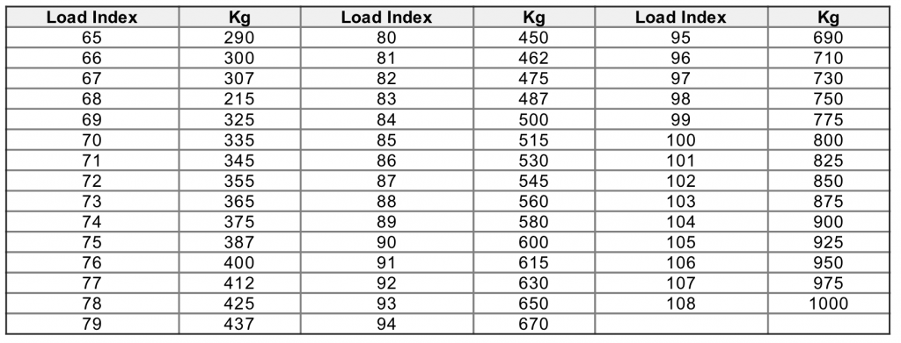
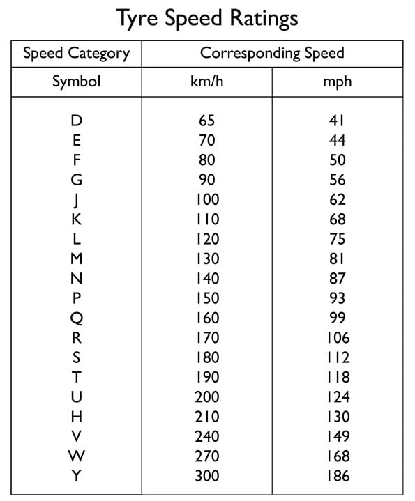
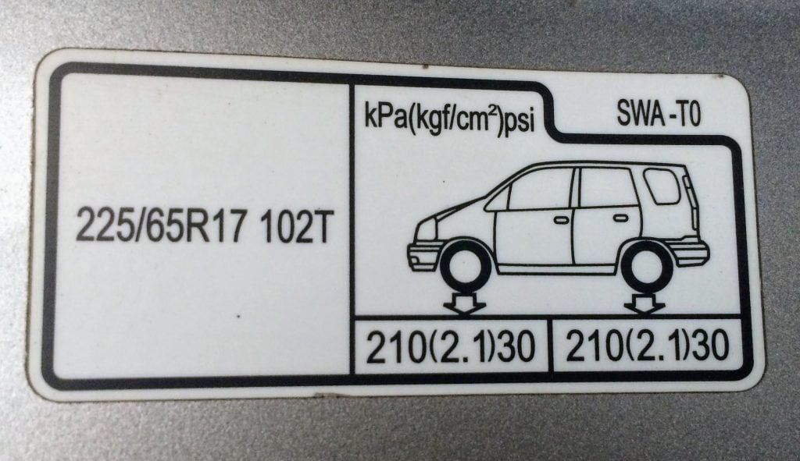
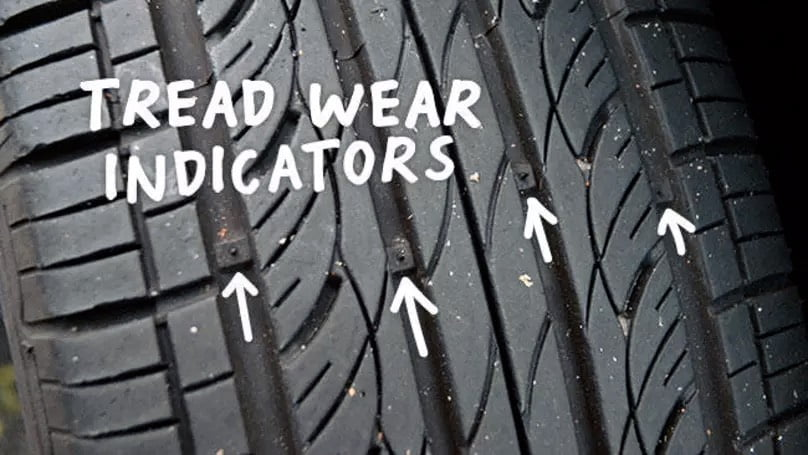

တာယာအမျိုးအစား
အခြေခံအားဖြင့် လူစီးကားနဲ့ ပစ်ကပ်ကားတွေရဲ့ တာယာကို Tubed နဲ့ Tubeless ဆိုပြီး နှစ်မျိုးခွဲနိုင်ပါတယ်။ Tubed တာယာဆိုတာက တာယာရဲ့ အတွင်းလာ လေထိုးရတဲ့ tube ရှိတဲ့ တာယာပါ။ ဟိုအရင်ကဆိုရင် တာယာအားလုံးက tube တာယာတွေပဲ ဖြစ်ကြပါတယ်။ အခုနောက်ပိုင်းမှာတော့ တာယာတွေအများစုဟာ tubeless တာယာတွေ ဖြစ်ကုန်ကြပါတယ်။ tubeless တာယာက tube တာယာထက် ဈေးပိုကြီးပေမယ့် သူ့ရဲ့ အဓိက အားသာချက်ကတော့ အထဲမှာ လေထိုး tube မပါတဲ့ အတွက်ကြောင့် ကားဘီးပေါက်ရင် တာယာက ပေါက်ကွဲ ထွက်မသွားပဲ လေတဖြည်းဖြည်းချင်း လျော့သွားတာပဲ ဖြစ်ပါတယ်။ ဒါ့ကြောင့် ကားအမြန်မောင်းနေတုန်း ကားဘီးက သံတိုသံစတွေကို နင်းမိလို့ ပေါက်သွားရင် တာယာပေါက်ကွဲ ထွက်မသွားတဲ့ အတွက် ကားမှောက်သွားတာမျိုး ဖြစ်ဖို့ခဲ့ယဉ်းပါတယ်။ နိုင်ငံတကာမှာတော့ အသစ်ထွက်တဲ့ ကားအားလုံးဟာ စက်ရုံက tubeless တာယာကိုပဲ တပ်ဆင်ပြီး ရောင်းချကြပါတယ်။တာယာရဲ့ ဝန်ခံနိုင်အား (Load Index)
ကားတာယာ တစ်လုံးဝယ်တော့မယ်ဆို တာယာရဲ့ ဝန်ခံနိုင်အားဟာ အရေးကြီးပါတယ်။ ဒီ Load Index ဟာ ကားတာယာတစ်လုံး ဘယ်လောက်အထိ အလေးချိန် ခံနိုင်လဲ ဆိုတာ ပြပါတယ်။ Load Index ကို သိချင်ရင် ကားတာယာရဲ့ ဘေးမှာ ရေးထားတဲ့ နံပါတ်ကို ဖတ်ကြည့်ရမှာပါ။ ဥပမာ၊ နံပါတ်က P215/65R15 95H လို့ရေးထားတယ် ဆိုပါဆို့။ နောက်ဆုံးက 95H ဟာ တာယာရဲ့ ဝန်ခံနိုင်အားနဲ့ အန္တရာယ်ကင်းတဲ့ အမြင့်ဆုံး အမြန်နှုန်းကို ပြပါတယ်။ 95 က တာယာရဲ့ ဝန်ခံနိုင်အား ဖြစ်ပါတယ်။ တာယာရဲ့ ဝန်ခံနိုင်အားကို ဇယား (၁) မှာ ပြထားပါတယ်။ အဲ့ဒီမှာ load index 95 ရဲ့ ဝန်ခံနိုင်အားက ၆၉၀ ကီလိုဂရမ် (၁၅၂၁ ပေါင်) ဖြစ်ပါတယ်။ ဒါဘီးတစ်လုံးချင်းစီရဲ့ ဝန်ခံနိုင်အား ဖြစ်ပါတယ်။ ကားဘီး ၄ ဘီးပေါင်းရဲ့ ဝန်ခံနိုင်အားကို သိချင်ရင် ဒီ ၆၉၀ ကီလိုကို ၄ နဲ့ မြှောက်ရမှာ ဖြစ်ပါတယ်။ ဒါ့ကြောင့်မို့ ဒီကားဘီးရဲ့ စုစုပေါင်းဝန်ခံနိုင်အား (၄ ဘီးပေါင်း) ဟာ ၂၇၆၀ ကီလိုဂရမ် ဖြစ်ပါတယ်။ ကား + လူ + ကုန် စုစုပေါင်းဟာ ၂၇၆၀ ကီလိုထက် မကျော်သင့်ပါဘူး။
အမြင့်ဆုံး အမြန်နှုန်း (Speed Rating)
နောက်ဆုံးက H ကတော့ တာယာရဲ့ အန္တရာယ်ကင်းကင်းနဲ့ မောင်းနိုင်တဲ့ အမြင့်ဆုံး အမြန်နှုန်းကို ပြပါတယ်။ ဇယား (၂) မှာ ကားတာယာတွေရဲ့ speed rating ကို ဖေါ်ပြပေး ထားပါတယ်။ ဒီဇယားမှာ ကြည့်ကြည့်ရင် H ရဲ့ အမြင့်ဆုံး အမြန်နှုန်းက တစ်နာရီ မိုင် ၁၃၀ (ကီလိုမီတာ ၂၁၀ ဖြစ်ပါတယ်)။ ဒီထက်မြန်တဲ့ နှုန်းနဲ့မောင်းရင် တာယာက စိတ်မချရ တော့ပါဘူး။
အမြင့်ဆုံး လေပေါင်ချိန် (Maximum air pressure)
ကားတာယာရဲ့ အမြင့်ဆုံး လေပေါင်ချိန် ခံနိုင်အား ဖြစ်ပါတယ်။ Max Pressure ဆိုပြီး ပြထားပါတယ်။အခြားဂဏန်းတွေက ဘာကို ပြောတာလဲ
အပေါ်က နမူနာ ပြခဲ့တဲ့ P215/65R15 95H မှာ နောက်ဆုံးက 95H အကြောင်းတော့ ပြောပြီးသွားပါပြီ။ သူ့ရှေ့က နံပါတ်တွေက ဘာကို ပြောတာလဲ။ ရှေ့ဆုံးက P ဆိုတာက လူစီးကား (Passenger vehicle) ကိုပြောတာပါ။ LR ဆိုရင် ဒါ light truck (ပစ်ကပ်ကား) တာယာပါ။ ဒီသတ်မှတ်ချက်က အမေရိကန် တိုင်ယာတွေမှာပဲ ပါဝင်ပြီး ဥရောပတိုက်ထုတ် တာယာတွေမှာ မပါပါဘူး။သူ့နောက်က 215 ဆိုတာက ကားတာယာရဲ့ ဗျက် (အကျယ်) ကို ဆိုတာပါ။ မီလီမီတာ နဲ့ ပြပါတယ်။ လက်မဖွဲ့ချင်ရင် သူ့ကို ၂၅ နဲ့ စားရပါမယ်။ 215mm ဖြစ်တဲ့အတွက် ၈ လက်မ ခွဲလောက် အကျယ်ရှိပါတယ်။
65 က တာယာရဲ့ ဘေးနံရံ အမြင့်ကို ပြတာပါ။ အကျယ်ရဲ့ ဘယ်လောက် ရာခိုင်နှုန်း (%) ရှိလဲဆိုပြီး ပြပါတယ်။ ဒီမှာ ၆၅ ဆိုတာ တာယာဗျက်ရဲ့ ၆၅% ဆိုတော့ ဘေးနံရံနဲ့ အမြင့်က ၂၁၅ * ၆၅% = ၁၄၀ မီလီမီတာ ရှိပါတယ်။
နောက်က R ဆိုတာ Radial ကို ပြောတာပါ။ တာယာအတွင်းထဲက သတ္တုကွန်ယက်ကို ဘယ်လိုဖွဲ့စည်းထားလဲ ပြောတာ ဖြစ်ပါတယ်။ Radial တည်ဆောက်ပုံကို လူစီးကား တာယာအများစုက အသုံးပြု ကြပါတယ်။
R နောက်က 15 ကတော့ ကားတာယာတပ်ဆင်ရမယ့် ကားဘီးခွေရဲ့ အရွယ်အစား လက်မဖြစ်ပါတယ်။ 15 ဆိုတော့ ၁၅ လက်မခွေမှာ တပ်ဆင်ရမှာ ဖြစ်ပါတယ်။
ကားတာယာကို လေပေါင် ဘယ်လောက် ထိုးမလဲ
ကားအများစုမှာ ထိုးရမယ့် လေပေါင်ကို ကားမောင်းသူရဲ့ဖက်ခြမ်းက တံခါနားမှာ ရေးထားတတ်ပါတယ်။ ရှာကြည့်ပြီး သူ့သတ်မှတ်လေပေါင်အတိုင်း ထိုးကြပါ။ အကယ်လို့ ရှာမတွေ့ရင်တော့ ကားလေးဆိုရင် ၃၀ – ၃၂ အားထိုးသင့်ပါတယ်။ ပစ်ကပ်ကားတွေကတော့ ကားအမျိုးအစားပေါ်မူတည်ပြီး ၃၀ – ၃၅ ကြား ရှိတတ်ပါတယ်။ကားတာယာလေပေါင်ကို လိုတာထက် ပိုထိုးမိရင် ကားဘီးက တင်းနေတဲ့အတွက် ကားက စီးရတာ သက်သာမှုမရှိပဲ ခုန်ပေါက်နေ တတ်ပါတယ်။ ကားဘီးရဲ့ ပွတ်အားလဲ နဲသွားတဲ့ အတွက်ကြောင့် ဘရိတ်အုပ်တဲ့ အကွားအဝေးလဲ ဝေးသွားတတ်ပါတယ်။ ကားတာယာရဲ့ ပန်းတွေစားတာများလာပြီး ကားတာယာရဲ့ သက်တမ်းလဲ တစ်ဝက်လောက်ထိ ကျသွားနိုင်ပါတယ်။ ဒါ့ကြောင့် ကိုယ့်ကားရဲ့ တာယာ လေပေါင်ချိန် ဘယ်လောက် သတ်မှတ်ထားလဲဆိုတာကို သိဖို့ အရေးကြီးပါတယ်။

ဘယ်အချိန်မှာ ကားတာယာကို လဲရမလဲ
ကားတာယာတစ်လုံးဟာ သူ့ရဲ့သက်တမ်းကုန်းသွားရင် ဆက်မသုံးသင့်တော့ပါဘူး။ ဒါဆိုဘယ်အချိန်မှာ အသစ်လဲရမလဲဆိုတာကို ဘယ်လိုသိနိုင်မလဲ။ တာယာတစ်လုံးမှာ သူ့ရဲ့ ပန်းတွေစားသွားရင် လဲသင့်ပါပြီ။ ပန်းတွေ စားသွားမသွား ဘယ်လိုသိနိုင်မလဲဆိုတော့ အခုခေတ် ကားတာယာတွေမှာ tread wear indicators တွေပါပါတယ်။ (ပုံ ၄ မှာကြည့်ပါ)။ အဲ့ဒါကတော့ တာယာပန်းတွေရဲ့ ကြားထဲမှာ ပါတဲ့ ရာဘာတုံးလေးတွေပါ။ပန်းတွေပါးသွားလို့ ကားတာယာရဲ့ မျက်နှာပြင်ဟာ အဲ့ဒီ tread wear indicator ရာယာတုံးလေးတွေရဲ့ မျက်နှာပြင်နဲ့ ညီသွားရင် ဒီတာယာကို ဆက်မသုံးသင့်တော့ပါဘူး။ သူ့ရဲ့သက်တမ်းက ကုန်သွားပါပြီ။